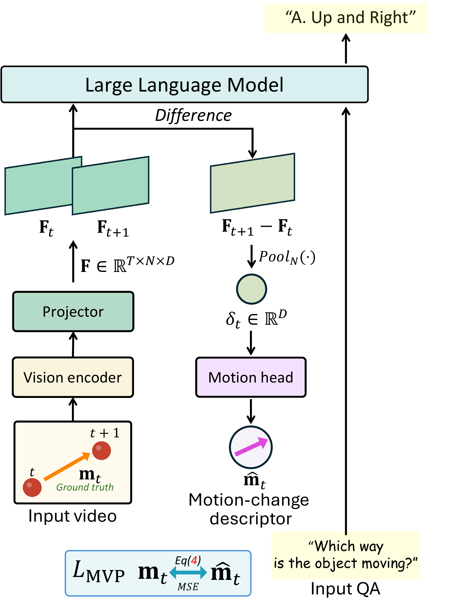

NeurIPS 2026
Which Way
Did It Move?
Diagnosing and Overcoming Directional Motion Blindness in Video-LLMs
1Kyung Hee University 2Princeton University
*Equally contributed first authors †Corresponding author
TL;DR On simple videos of a single object moving left, right, up, or down, most Video-LLMs perform near chance. We trace the failure to a direction binding gap and introduce MoDirect and DeltaDirect, which raise MoDirect-SynBench accuracy from 25.9% to 85.9%.
Animation: a yellow circle moves from left to right. Asked for its color, the Video-LLM correctly answers Yellow. Asked which way it moved, the Video-LLM answers Leftward; the ground truth is Rightward.
Overview
-
1Find
Recent Video-LLMs identify an object’s color, yet fail to tell whether it moved left, right, up, or down.
-
2Diagnose
Motion direction is linearly decodable inside the model, but it is not bound to the correct answer option.
-
3Fix
A controlled dataset family and a training-only objective improve direction understanding without changing inference.
Read the abstract
Video Large Language Models (Video-LLMs) have made rapid progress on temporal video understanding, yet many fail at a basic perceptual primitive: signed image-plane motion direction. On simple videos of a single object moving left, right, up, or down, most Video-LLMs perform near chance, with above-chance cases largely attributable to prediction biases rather than genuine direction understanding. We call this failure directional motion blindness. We localize the failure by tracing motion direction information through the Video-LLM pipeline. Motion direction remains linearly accessible from the vision encoder, projector, and LLM hidden states, but the readout fails to bind this signal to the correct verbal answer option, revealing a direction binding gap. Although synthetic motion direction instruction tuning reduces this gap on the source domain, motion direction concept vector analysis shows that visual complexity weakens the signal magnitude and limits out-of-domain generalization. We introduce MoDirect, a dataset family for motion direction instruction tuning and evaluation, and DeltaDirect, a diagnosis-driven, projector-level objective that predicts normalized 2-D motion vectors from adjacent-frame feature deltas. On MoDirect-SynBench, instruction tuning with DeltaDirect improves motion direction accuracy from 25.9% to 85.9%. On MoDirect-RealBench, DeltaDirect improves real-world motion direction accuracy by 21.4 points over the vanilla baseline without real-world tuning data, while preserving standard video-understanding performance.
Directional motion blindness
On a seemingly trivial synthetic video of a yellow circle moving from left to right, most Video-LLMs show accuracy close to random chance (25%), with GPT-5 only reaching 58.9%. We refer to this systematic failure to distinguish signed motion directions as directional motion blindness.

MoDirect
A dataset family for signed image-plane motion direction. Its synthetic part is a controlled 2×2 design over foreground type and background type, and every video contains a single object moving in one of four directions.
- left
- right
- up
- down
Primitive-on-Syn6,000 videos
Primitive-on-Real6,000 videos
Cutout-on-Syn6,000 videos
Cutout-on-Real6,000 videos
MoDirect-Inst
100,000 video–QA pairs built from the Primitive-on-Syn domain.
MoDirect-SynBench
Four domains with 6,000 videos each. Four-way multiple choice; chance is 25%.
MoDirect-RealBench
Curated from Something-Something-V2 (722), KTH (899), and TOMATO (403).
Where does directional motion blindness arise?
We trace motion direction information through LLaVA-Video, from visual representations to the answer token.
Direction is decodable, but not converted into the answer
Linear probes recover motion direction at every stage: 99.8% from the vision encoder, 96.5% after the projector, and 98.1% and 95.3% inside the LLM. Yet MCQ accuracy is 27.6%, near the 25% chance level, and the best input-side scaffold reaches only 34.7%. We call this mismatch the direction binding gap.
The gap persists across architectures and scales: a shared structural limitation rather than a model-specific artifact.

Instruction tuning closes the gap on the source domain
After tuning on MoDirect-Inst, logit lens accuracy converges to probing accuracy and MCQ accuracy on Primitive-on-Syn rises from 27.6% to 99.5%. But the gap reopens out of domain: 0.3 points on Primitive-on-Syn, 12.1 points on Cutout-on-Real.

Shared orientation, weak magnitude
After instruction tuning, motion direction concept vectors align across domains, but their magnitude drops with visual complexity. Restoring only the magnitude recovers up to 15.5 points on Cutout-on-Real: the out-of-domain failure is a magnitude deficit, not a missing motion direction geometry.

DeltaDirect
The diagnosis points to one place to intervene: make the projector output carry a stronger signed displacement signal before it enters the LLM. DeltaDirect is a training-only auxiliary objective that does exactly that.
Animated diagram. Two adjacent video frames pass through the vision encoder and the projector into the LLM. During training, the difference between the two frames’ projector features is pooled and a linear motion head predicts the 2-D motion vector, which is pulled toward the ground-truth vector. At inference this branch is removed and the model answers through the unchanged pipeline.
-
1
Pool the difference of projector features between adjacent frames into a motion-change descriptor.
-
2
A linear head with only 2D+2 parameters predicts the normalized 2-D motion vector, supervised by the known object motion in MoDirect-Inst.
-
3
The branch is removed at inference: input format, token sequence, and decoding procedure stay unchanged.
Show Figure 6 and the equations

Motion-change descriptor from adjacent-frame projector features
Normalized 2-D motion target from the object centers
Linear prediction head
Motion Vector Prediction (MVP) loss
Total training objective
Results
MoDirect-SynBench
25.9% → 85.9%
Average accuracy of LLaVA-Video-7B, before and after tuning with DeltaDirect. Chance: 25%.
MoDirect-RealBench
43.1% → 64.5%
+21.4 points over the vanilla baseline, without real-world tuning data. Chance: 39.7%.
Standard video benchmarks
69.4 → 69.8
Average over five benchmarks for LLaVA-Video-7B. General video understanding is preserved.
Table 1: every model, every domain
Tables 2–3: where and what to supervise
Table 4: general video benchmarks
BibTeX
@inproceedings{lee2026deltadirect,
title = {Which Way Did It Move? Diagnosing and Overcoming
Directional Motion Blindness in Video-LLMs},
author = {Lee, Jongseo and Lee, Hyuntak and Kim, Sunghun and
Kim, Sooa and Chung, Jihoon and Choi, Jinwoo},
booktitle = {Advances in Neural Information Processing Systems (NeurIPS)},
year = {2026}
}Acknowledgment. This work was supported by the National Research Foundation of Korea (NRF) grants funded by the Korea government (MSIT) (RS-2025-02216217, 50%) and (RS-2026-25616405, 25%). Additionally, it was supported in part by the Institute of Information & Communications Technology Planning & Evaluation (IITP) grant funded by the Korea Government (MSIT) under grant RS-2024-00353131 (10%) and the Institute of Information & Communications Technology Planning & Evaluation (IITP)-ITRC (Information Technology Research Center) grant funded by the Korea government (MSIT) (IITP-2026-RS-2023-00259004, 10%). This research was also supported by the MSIT (Ministry of Science and ICT), Korea, under the National Program for Excellence in SW (2023-0-00042, 5%) supervised by the IITP (Institute of Information & Communications Technology Planning & Evaluation) in 2026.